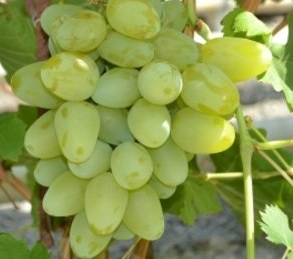
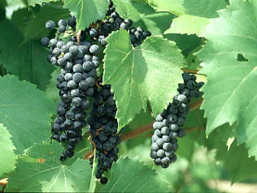

Бажена

Бажена – це столовий сорт винограду, ягоди якого подовженою яйцевидної форми.
Висаджують у вересні, поки ще тепло. Дозрівають дуже швидко, близько 110 днів. Високі врожаї.
М’якоть за смаком соковита, м’ясиста. Ягоди мають гармонійним смаком, на колір вони жовті. Кількість цукру середня.
Особливості посадки
Прищеплені живці висаджують і ті саджанці, у яких розвинена коренева система.
Лозу, ту, яка визріла, обрізають на 6 вічок. Необхідно видаляти слабкі пагони. Проводити профілактичні заходи
по обприскуванню, вносити мінеральні і органічні добрива.
Бако

Бако чёрный - франко-американский гибридный сорт винограда. Кусты очень сильнорослые. Грозди средние,
цилиндроконические, неплотные. Ягоды средние и мелкие, черные с густо-окрашенным соком и высокой кислотностью. Сорт
лучше удается на тяжелых почвах. На легких и плодородных почвах рост побегов чрезмерный, вызревание лозы
удовлетворительное, что приводит к снижению морозоустойчивости.
Глазки распускаются рано, что увеличивает риск
повреждения весенними заморозками, для этого сорта винограда. Созревает в конце сентября. Устойчив к грибным
заболеваниям, толерантен к филлоксере, морозоустойчивость -27°С. Дает сильно окрашенные, высококислотные вина с
низким содержанием танинов.